Pocket Sentry: Wi-Fi motion alarm
| Course | ECE 1100 Discovery Project, Georgia Tech |
|---|---|
| Type | Individual project |
| Dates | Sept – Nov 2026 |
| Built with | ESP32, HC-SR501 PIR sensor, C++ in the Arduino IDE, Telegram Bot API |
A small battery-powered box that sleeps until someone walks past it, then beeps and sends an alert to my phone over Wi-Fi. I took it from a one-page pitch to a soldered, working device: choosing the parts, planning the perfboard hole by hole, writing the firmware, and debugging it until the alerts came through.
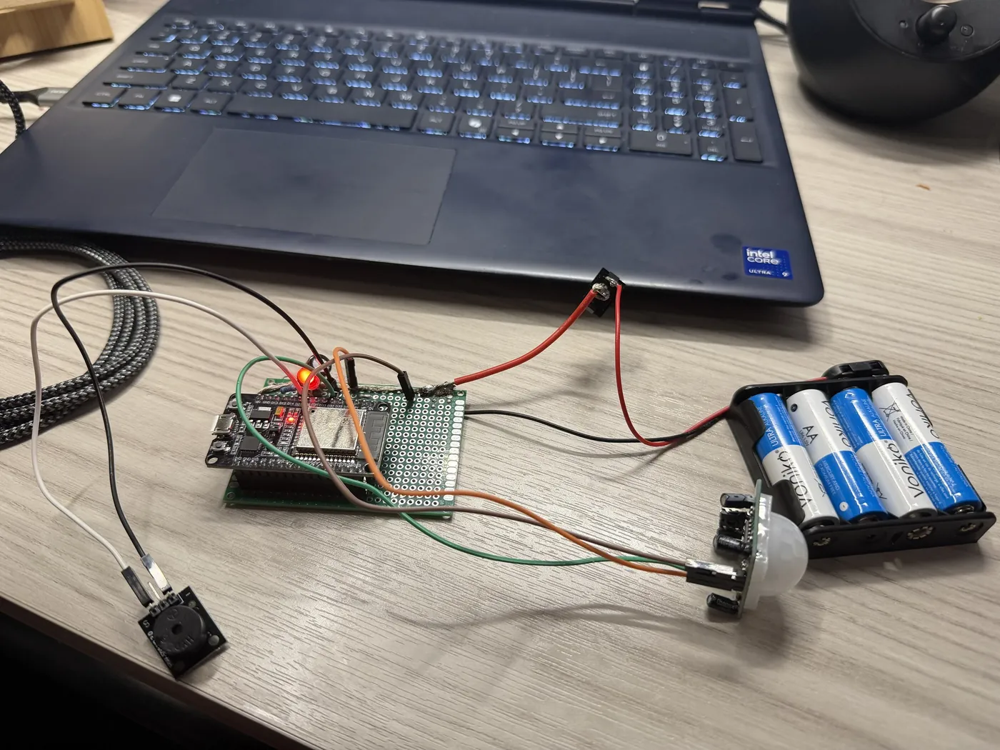
How it works
Most of the time the ESP32 is in deep sleep, with almost everything on the chip powered down. A passive infrared (PIR) sensor watches the room. It doesn't measure distance or motion directly; it measures changes in infrared light. A warm body moving across its lens zones changes the heat pattern on its two-element sensor, and its output pin goes HIGH.
That pin is wired to GPIO 33, one of the ESP32's RTC pins, which can wake the chip from deep sleep. On waking, the firmware:
- Beeps the buzzer and lights the LED right away, before touching the network.
- Joins Wi-Fi, using the router's channel and address saved from the last connection so it can skip a full scan.
- Sends an HTTPS request to the Telegram Bot API, which pushes the message to my phone.
- Logs how long the Wi-Fi connection and the alert took, in milliseconds.
- Waits for the PIR to go quiet, then goes back to sleep.
Two values survive sleep in RTC memory: the alert count and the cached Wi-Fi details. Every wake is otherwise a fresh boot.
Hardware
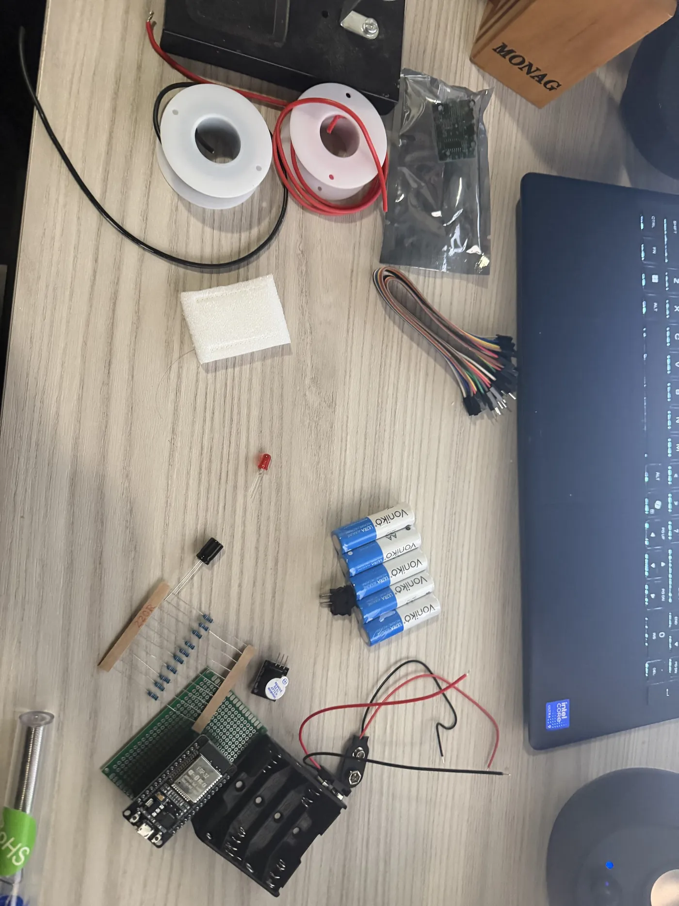
| Controller | ESP32-WROOM-32 dev board (CP2102 USB chip), in female header sockets so it can be removed |
|---|---|
| Sensor | HC-SR501 PIR, set to minimum hold time, maximum sensitivity and repeat-trigger mode |
| Outputs | KY-012 active buzzer on GPIO 27; red LED through a 220 Ω resistor on GPIO 26 |
| Power | 4×AA holder through a switch to the board's VIN pin, with a 470 µF 16 V capacitor across the supply |
| Board | 5×7 cm double-sided perfboard, solder-bridged traces and bare-wire power and ground buses |
Design decisions
Dropping the lithium cell
My pitch called for an 18650 lithium cell with a USB charging board. Working through the voltages changed that. The HC-SR501 needs at least 4.5 V, and a lithium cell only gives 3.7 to 4.2 V, so I would also have needed a boost converter set to 5 V. Four alkaline AAs give about 6 V fresh and still around 4.8 V near empty, which is inside the range of both the ESP32's VIN regulator and the PIR. That removed the charger, the boost converter and the lithium cell, three parts that could each fail. The trade-off is that the device is no longer USB-rechargeable.
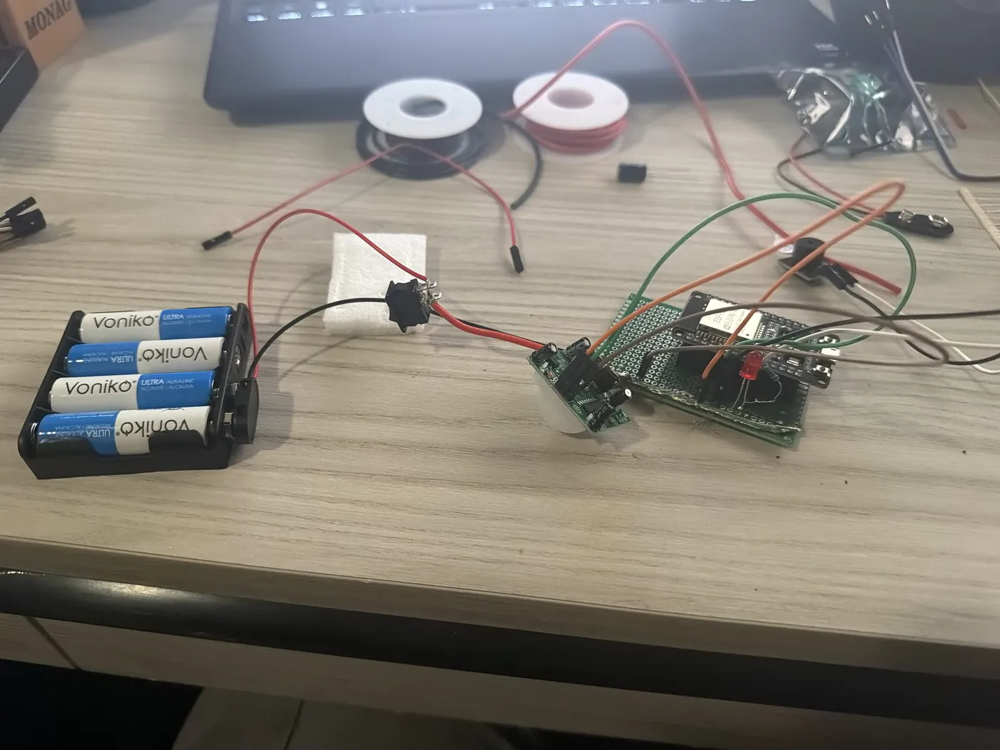
A capacitor for the radio
When the ESP32's Wi-Fi radio transmits it pulls short bursts of a few hundred milliamps. AA cells can't deliver that instantly, and the dip can reset the chip right as it tries to send the alert. A 470 µF capacitor across the supply, next to the board, covers those bursts. I picked the 16 V rating over 10 V for margin above the pack's 6.4 V maximum.
Choosing pins
The wake pin had to be RTC-capable, which is why the PIR uses GPIO 33. For the buzzer I first wanted GPIO 35 for an easier trace, but GPIOs 34 to 39 on the ESP32 are input-only and can't drive anything, so it moved to GPIO 27. I also avoided GPIO 12, which can stop the chip from booting if it is pulled HIGH at startup.
Building the board
Before soldering I drew the layout hole by hole, with every connection on one side of the ESP32 so only half the board needed wiring. Positive and ground run as bare-wire buses down the edge, and short solder bridges carry each signal from a component to its header pin. The holes on this board are all isolated, so every connection exists only because I soldered it.
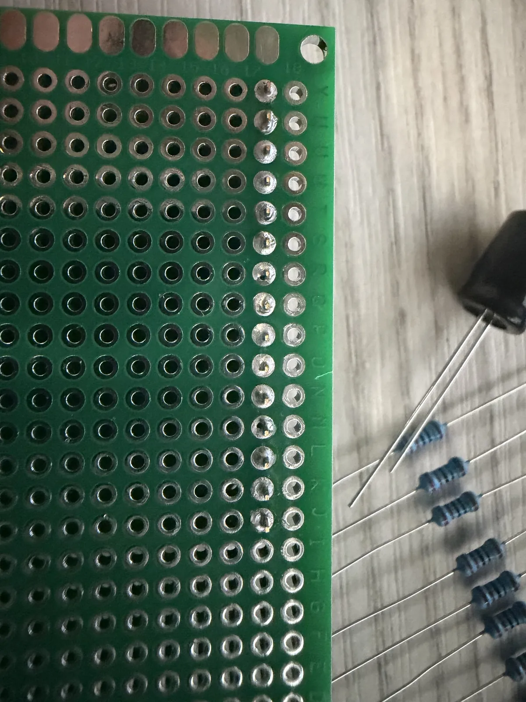
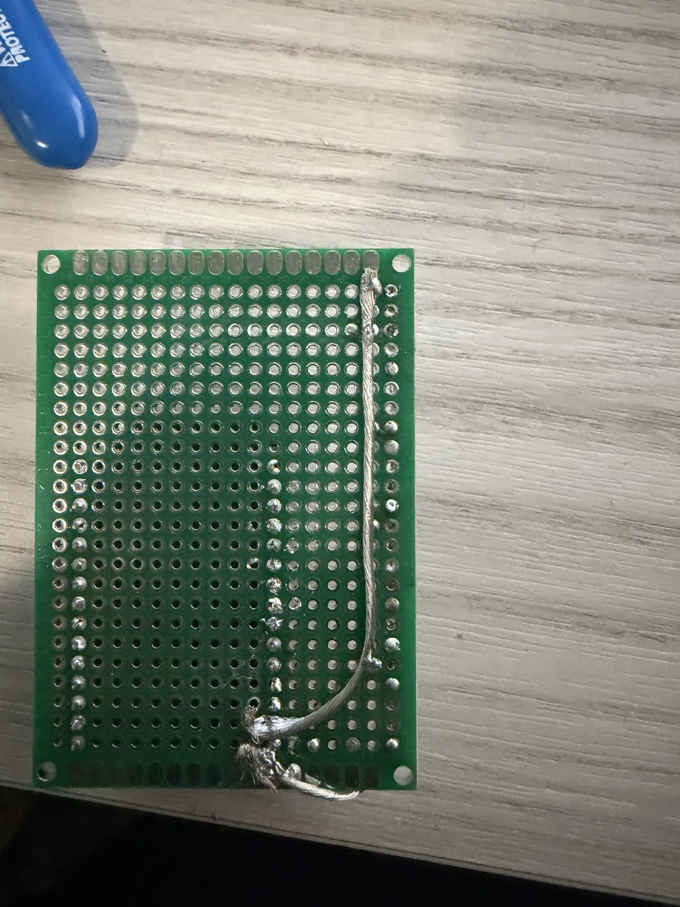
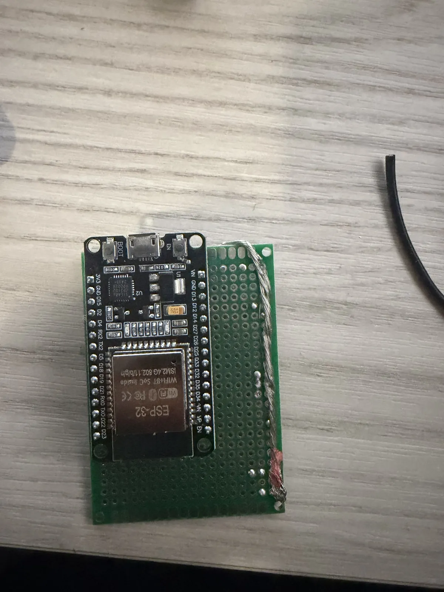
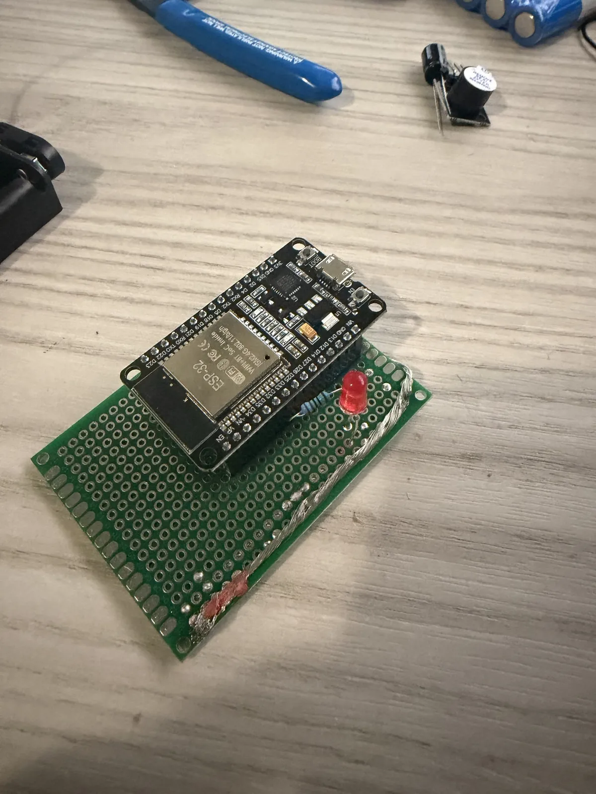
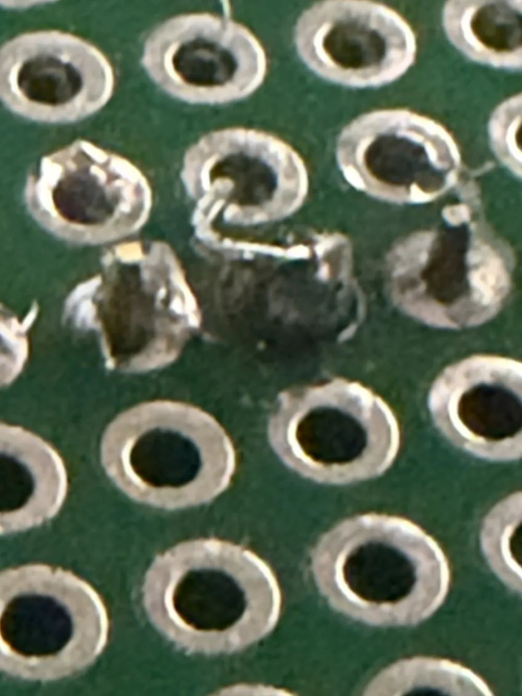
Firmware
The sketch is written in C++ in the Arduino IDE and uses only libraries that ship with the ESP32 board package. Because every run ends in deep sleep, all of the logic lives in setup(), which checks why the chip woke up. A power-on runs the first-boot path: a 60-second PIR warm-up with a slow LED blink, then an "armed" message. A wake from the PIR pin runs the alert path. loop() is never reached.
A few details that made it reliable:
- The PIR pin gets a pull-down during sleep, so a loose wire reads as "no motion" instead of floating and waking the chip at random.
- The buzzer and LED pins are held LOW through sleep so they can't drift and click.
- Before sleeping, the code waits for the PIR output to return LOW, plus a 3-second cooldown. Otherwise the still-HIGH pin would wake the chip immediately.
- If the cached Wi-Fi channel fails, for example because the router changed channels, it falls back to a normal scan.
/*
Portable Wi-Fi Motion Alarm - ECE 1100 Discovery Project
Anish Bhatia
Board: "ESP32 Dev Module" (Arduino IDE, "esp32 by Espressif" board package)
Wiring: PIR OUT -> GPIO 33 (wakes the ESP32 from deep sleep)
Buzzer S -> GPIO 27 (KY-012 active buzzer, middle pin unconnected)
LED -> GPIO 26 (through the 220 ohm resistor)
How it works
1. First power-on: waits for the PIR to warm up, connects to Wi-Fi once,
sends an "armed" message, then goes to deep sleep.
2. Motion makes PIR OUT go HIGH, which wakes the ESP32.
3. It beeps, connects to Wi-Fi, sends a Telegram message, and logs how long
that took (open Serial Monitor at 115200 to see it while on USB).
4. It waits for the PIR to go LOW again, then goes back to deep sleep.
Before uploading
- Fill in the four values in the "Fill these in" block.
- In Telegram, open a chat with your bot and send it /start, or it is not
allowed to message you.
- Switch the battery pack OFF before plugging in USB.
*/
#include <WiFi.h>
#include <WiFiClientSecure.h>
#include <HTTPClient.h>
#include "esp_sleep.h"
#include "driver/gpio.h"
#include "driver/rtc_io.h"
// ---------------- Fill these in ----------------
const char* WIFI_SSID = "your-wifi-or-hotspot";
const char* WIFI_PASS = "your-wifi-password";
const char* BOT_TOKEN = "1234567890:replace-with-token-from-BotFather";
const char* CHAT_ID = "123456789"; // your numeric chat ID from @myidbot
// ------------------------------------------------
// Pins
const gpio_num_t PIR_PIN = GPIO_NUM_33;
const int BUZZER_PIN = 27;
const int LED_PIN = 26;
// Timing
const uint32_t PIR_WARMUP_MS = 60000; // HC-SR501 gives false triggers for ~60 s after power-on
const uint32_t WIFI_TIMEOUT_MS = 8000; // give up on a Wi-Fi attempt after this
const uint32_t CLEAR_TIMEOUT_MS = 30000; // longest wait for PIR to go LOW before sleeping anyway
const uint32_t COOLDOWN_MS = 3000; // quiet time after PIR clears, avoids instant re-triggers
// Kept in RTC memory, so these survive deep sleep (not a full power-off)
RTC_DATA_ATTR uint32_t alertCount = 0;
RTC_DATA_ATTR int32_t savedChannel = 0; // cached Wi-Fi channel for a faster reconnect
RTC_DATA_ATTR uint8_t savedBssid[6]; // cached router MAC address
// ---------- Small helpers ----------
void beep(int times, int onMs, int offMs) {
for (int i = 0; i < times; i++) {
digitalWrite(BUZZER_PIN, HIGH);
delay(onMs);
digitalWrite(BUZZER_PIN, LOW);
if (i < times - 1) delay(offMs);
}
}
void blinkLed(int times, int onMs, int offMs) {
for (int i = 0; i < times; i++) {
digitalWrite(LED_PIN, HIGH);
delay(onMs);
digitalWrite(LED_PIN, LOW);
delay(offMs);
}
}
String urlEncode(const String& s) {
const char* hex = "0123456789ABCDEF";
String out;
for (size_t i = 0; i < s.length(); i++) {
char c = s[i];
if (isalnum((unsigned char)c) || c == '-' || c == '_' || c == '.' || c == '~') {
out += c;
} else {
out += '%';
out += hex[(c >> 4) & 0x0F];
out += hex[c & 0x0F];
}
}
return out;
}
bool waitForWiFi(uint32_t timeoutMs) {
uint32_t start = millis();
while (WiFi.status() != WL_CONNECTED && millis() - start < timeoutMs) {
delay(20);
}
return WiFi.status() == WL_CONNECTED;
}
// Connects using the cached channel and router if we have them (much faster),
// and falls back to a normal scan if that fails.
bool connectWiFi() {
WiFi.persistent(false);
WiFi.mode(WIFI_STA);
bool ok = false;
if (savedChannel > 0) {
WiFi.begin(WIFI_SSID, WIFI_PASS, savedChannel, savedBssid, true);
ok = waitForWiFi(WIFI_TIMEOUT_MS / 2);
if (!ok) {
Serial.println("Cached Wi-Fi info failed, scanning normally");
WiFi.disconnect(true);
delay(50);
savedChannel = 0;
}
}
if (!ok) {
WiFi.begin(WIFI_SSID, WIFI_PASS);
ok = waitForWiFi(WIFI_TIMEOUT_MS);
}
if (!ok) return false;
savedChannel = WiFi.channel();
memcpy(savedBssid, WiFi.BSSID(), 6);
return true;
}
bool sendTelegram(const String& text) {
WiFiClientSecure client;
client.setInsecure(); // skips certificate checking; fine for a class prototype
HTTPClient https;
String url = String("https://api.telegram.org/bot") + BOT_TOKEN +
"/sendMessage?chat_id=" + CHAT_ID +
"&text=" + urlEncode(text);
if (!https.begin(client, url)) return false;
https.setTimeout(5000);
int code = https.GET();
if (code != 200) {
Serial.printf("Telegram error: HTTP %d\n", code);
Serial.println(https.getString()); // Telegram explains what was wrong
}
https.end();
return code == 200;
}
// Waits until the PIR output goes LOW, so sleeping doesn't wake us straight back up.
void waitForClear() {
uint32_t start = millis();
while (digitalRead(PIR_PIN) == HIGH && millis() - start < CLEAR_TIMEOUT_MS) {
delay(50);
}
delay(COOLDOWN_MS);
}
void goToSleep() {
digitalWrite(BUZZER_PIN, LOW);
digitalWrite(LED_PIN, LOW);
WiFi.disconnect(true);
WiFi.mode(WIFI_OFF);
// Hold the buzzer and LED pins LOW during sleep so they can't float and click.
gpio_hold_en((gpio_num_t)BUZZER_PIN);
gpio_hold_en((gpio_num_t)LED_PIN);
gpio_deep_sleep_hold_en();
// Wake when PIR OUT goes HIGH. The pull-down keeps it LOW if a wire comes loose.
rtc_gpio_pullup_dis(PIR_PIN);
rtc_gpio_pulldown_en(PIR_PIN);
esp_sleep_enable_ext0_wakeup(PIR_PIN, 1);
Serial.println("Sleeping until motion...");
Serial.flush();
esp_deep_sleep_start();
}
// ---------- The two ways the ESP32 can start ----------
void firstBoot() {
Serial.println("\nMotion alarm powered on. Warming up the PIR for 60 s...");
// Slow LED blink during warm-up so you can see it isn't armed yet.
uint32_t start = millis();
while (millis() - start < PIR_WARMUP_MS) {
blinkLed(1, 100, 900);
}
if (connectWiFi()) {
Serial.printf("Wi-Fi OK, IP %s, channel %d\n",
WiFi.localIP().toString().c_str(), (int)savedChannel);
bool ok = sendTelegram("Motion alarm armed");
Serial.println(ok ? "Armed message sent" : "Armed message FAILED");
beep(2, 80, 80); // two short beeps = armed
} else {
Serial.println("Wi-Fi FAILED. Check WIFI_SSID / WIFI_PASS. Arming anyway.");
beep(1, 600, 0); // one long beep = Wi-Fi problem
}
}
void handleMotion() {
uint32_t t0 = millis(); // time since wake
alertCount++;
Serial.printf("\nMotion! Alert #%lu\n", (unsigned long)alertCount);
digitalWrite(LED_PIN, HIGH);
beep(1, 150, 0); // local alarm right away, before Wi-Fi
bool wifiOk = connectWiFi();
uint32_t tWifi = millis() - t0;
bool sent = false;
if (wifiOk) {
sent = sendTelegram("Motion detected (alert #" + String(alertCount) + ")");
}
uint32_t tSent = millis() - t0;
// These are your latency measurements for the "couple seconds" goal.
Serial.printf("Wi-Fi connected after %lu ms\n", (unsigned long)tWifi);
Serial.printf("Alert %s after %lu ms\n", sent ? "sent" : "FAILED", (unsigned long)tSent);
digitalWrite(LED_PIN, LOW);
if (sent) {
blinkLed(2, 100, 100); // two quick blinks = phone alert sent
} else {
beep(1, 600, 0); // one long beep = alert failed
}
}
void setup() {
// Release the pins we held LOW during sleep before using them again.
gpio_hold_dis((gpio_num_t)BUZZER_PIN);
gpio_hold_dis((gpio_num_t)LED_PIN);
gpio_deep_sleep_hold_dis();
rtc_gpio_deinit(PIR_PIN); // hand the PIR pin back from sleep mode to normal digitalRead
pinMode(BUZZER_PIN, OUTPUT);
pinMode(LED_PIN, OUTPUT);
digitalWrite(BUZZER_PIN, LOW);
digitalWrite(LED_PIN, LOW);
pinMode(PIR_PIN, INPUT);
Serial.begin(115200);
if (esp_sleep_get_wakeup_cause() == ESP_SLEEP_WAKEUP_EXT0) {
handleMotion();
} else {
firstBoot();
}
waitForClear();
goToSleep();
}
void loop() {
// Never reached: every run ends in deep sleep, and waking restarts setup().
}
The Wi-Fi name, password, bot token and chat ID are placeholders here. The real values stay on the device.
Debugging
The code compiled the first time. Getting it onto the board and talking to my phone took longer.
No port to upload to
Every COM port Arduino IDE offered failed with a timeout. They were Bluetooth serial ports, and the ESP32 wasn't showing up at all. The first cause was a charge-only USB cable, which carries power but no data. With a data cable, Device Manager showed the board's CP2102 USB chip under "Other devices" with no driver. Installing Silicon Labs' CP210x driver turned it into a real COM port, and the upload went through.
"Chat not found"
The first boot connected to Wi-Fi but Telegram rejected the message with HTTP 400, "chat not found." The token and chat ID were both correct. I had sent /start to the bot I used to look up my ID, not to my own bot, and Telegram won't let a bot message someone who hasn't messaged it first. One tap on Start fixed it.
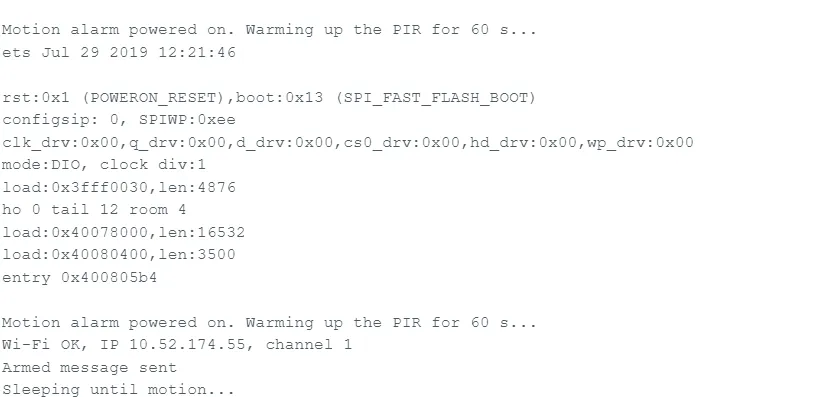
Results
On its first full test the alarm armed itself and then sent seven motion alerts over about four minutes, one for each time I walked or waved past it, with the status LED lighting on every wake.
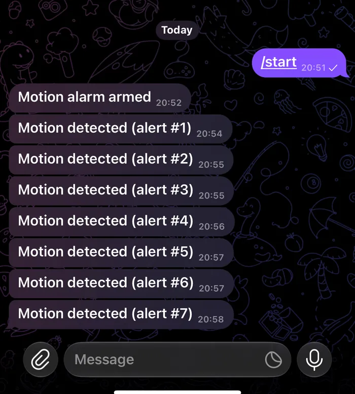
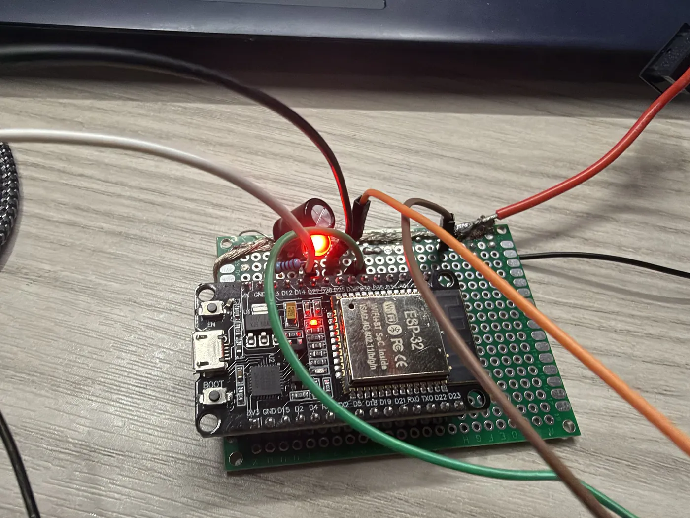
What's next
- Enclosure. A 3D-printed case modeled in SolidWorks and printed at the Hive, with a window for the PIR dome, a slot for the switch, a USB cutout for reprogramming, holes for the LED and buzzer, and a battery door.
- Alert speed. The firmware already logs trigger-to-sent time. I'm averaging it over repeated runs to check it against the pitch's goal of an alert within a couple of seconds.
- Battery life. Measuring sleep current with a multimeter in series with the pack to estimate how many days the AAs last.
- Range. Tuning the PIR's sensitivity so it triggers reliably at 3 m without picking up heat from vents or sunlight.